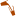
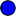
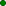
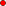
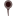
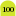

<html>
<head>
    <title>OSM India</title>
<script type="text/javascript">
try {
var pageTracker = _gat._getTracker("UA-10806571-3");
pageTracker._trackPageview();
} catch(err) {}</script>

    <!-- bring in the OpenLayers javascript library
         (here we bring it from the remote site, but you could
         easily serve up this javascript yourself) -->
    <script src="http://www.openlayers.org/api/OpenLayers.js"></script>

    <!-- bring in the OpenStreetMap OpenLayers layers.
         Using this hosted file will make sure we are kept up
         to date with any necessary changes -->
<script src="http://www.openstreetmap.org/openlayers/OpenStreetMap.js"></script>


    <script type="text/javascript">

    // script to extract params from the URL
    function getParamValue( paramName ){
      paramName = paramName.replace(/[\[]/,"\\\[").replace(/[\]]/,"\\\]");
      var regexS = "[\\?&]"+paramName+"=([^&#]*)";
      var regex = new RegExp( regexS );
      var results = regex.exec( window.location.href );
      if( results == null )
        return null;
      else
        return results[1];
    }


        // Start position for the map is hardcoded if it is not available in URL params

    // Get the center from the URL. Else set the center to Nagpur
    // Get the zoom level from the URL. Else set the zoom level to 4 so that all of india is visible in a 800x600 resolution screen
    var lat = getParamValue("lat");
    var lon = getParamValue("lon");
    var zoom = getParamValue("zoom");

        if (lat == null) lat = 21.07;
        if (lon == null) lon = 79.27;
        if (zoom == null) zoom = 4;

        var map;         //complex object of type OpenLayers.Map

        //Initialise the 'map' object
        function init() {

            map = new OpenLayers.Map ("map", {
                controls: [
                                        new OpenLayers.Control.Navigation(),
                                                                new
                                        OpenLayers.Control.PanZoomBar(),
                                                                new
                                        OpenLayers.Control.LayerSwitcher({'ascending':false}),
                                                                new
                                        OpenLayers.Control.Permalink(),
                                                                new
                                        OpenLayers.Control.ScaleLine(),
                                                                new
                                        OpenLayers.Control.Permalink('permalink'),
                                                                new
                                        OpenLayers.Control.MousePosition(),
                                                                new
                                        OpenLayers.Control.OverviewMap(),
                                                                new
                                        OpenLayers.Control.KeyboardDefaults(),
                                                                new
                                        OpenLayers.Control.Attribution()
                                                            ],


                maxExtent: new OpenLayers.Bounds(-20037508.34,-20037508.34,20037508.34,20037508.34),
                maxResolution: 156543.0399,
                numZoomLevels: 25,
                units: 'm',
                projection: new OpenLayers.Projection("EPSG:900913"),
                displayProjection: new OpenLayers.Projection("EPSG:4326")
            } );


            // Define the map layer
            // Note that we use a predefined layer that will be
            // kept up to date with URL changes
            // Here we define just one layer, but providing a choice
            // of several layers is also quite simple
            // Other defined layers are OpenLayers.Layer.OSM.Mapnik, OpenLayers.Layer.OSM.Maplint and OpenLayers.Layer.OSM.CycleMap
        newLayer = new OpenLayers.Layer.OSM("New Layer","http://202.164.53.116/OSM/tiles/${z}/${x}/${y}.png",
        {numZoomLevels:21});
            map.addLayer(newLayer);

            var lonLat = new OpenLayers.LonLat(lon, lat).transform(new OpenLayers.Projection("EPSG:4326"), map.getProjectionObject());
    //  map.zoomToMaxExtent();

            map.setCenter (lonLat, zoom);
        }

    </script>
</head>

<!-- body.onload is called once the page is loaded (call the 'init' function) -->
<body onload="init();">
<div style="width:100%; height:100%; float:left;">
<!--<h2> India specific OSM map </h2>
<p>This map is hosted on the <a href="http://nrcfoss.au-kbc.org.in">NRCFOSS AU</a> server and can be used to experiment
with tags specific to India. The source code of the XML used is available at
<a href = "http://bitbucket.org/lawgon/osmindia/">Osmindia</a>
<p><a href="./quicklinks.html">Quicklinks</a>
<h2>India specific symbols</h2>
<table border=1>
    <tr>
        <th>Point </th>
        <th>Symbol </th>
    </tr>
    <tr>
        <td>ATM </td>
        <td></td>
    </tr>
    <tr>
        <td>Bank </td>
        <td></td>
    </tr>
    <tr>
        <td>Prepaid auto </td>
        <td></td>
    </tr>
    <tr>
        <td>Unmetered auto </td>
        <td></td>
    </tr>
    <tr>
        <td>Metered auto </td>
        <td></td>
    </tr>
    <tr>
        <td>Tea shop </td>
        <td></td>
    </tr>
    <tr>
        <td>Well</td>
        <td></td>
    </tr>
    <tr>
        <td>Electricals </td>
        <td></td>
    </tr>
    <tr>
        <td>Vegetarian</td>
        <td></td>
    </tr>
    <tr>
        <td>Non-vegetarian </td>
        <td></td>
    </tr>
    <tr>
        <td>Golf tee</td>
        <td></td>
    </tr>
    <tr>
        <td>Yardage marker </td>
        <td></td>
    </tr>
    <tr>
        <td>Golf green</td>
        <td></td>
    </tr>
    <tr>
        <td>Palm </td>
        <td></td>
    </tr>
    <tr>
        <td>Tree </td>
        <td></td>
    </tr>
</table>
</div> -->

    <!-- define a DIV into which the map will appear. Make it take up the whole window -->
    <div style="width:100%; height:100%; float:left;" id="map"></div>

</body>

</html>
